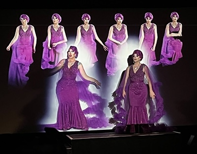

- Artist Bio
- Background
- Selected Talks / Videos
- Current/Upcoming Exhibtions
- Selected Solo Exhibitions and Installations
- Selected Group Exhibitions and Projects
- Performances
- Prizes & Collections
- Articles / Press / TV
- Research - Publications / Book / Interviews / Academia
- Talks / Conferences / Workshops
Jake Elwes (b.1993, UK) is an artist living and working in London currently working to queer
artificial intelligence with drag performers. Having been making art exploring the aesthetics and
ethics of machine learning systems since the very first generative models in 2016, their art
searches for poetry and narrative in the success and failures of digital systems. Across projects
that encompass moving-image installation, sound and performance, Jake’s work finds unusual ways of
demystifying, mapping and subverting technology. Works include deepfake drag in The Zizi Project,
glitching oppressive algorithms in Machine Learning Porn and reframing AI generated marsh birds back
into nature with CUSP. Jake’s work also calls for us to challenge who’s building these systems and
who (or what) they’re building them for, and whether we as artists and queers can reclaim these
technologies to build our own digital utopias.
Jake studied at The Slade School of Fine Art, UCL (2013-17) and their work has been exhibited in
museums and galleries internationally, including the Victoria and Albert Museum, London; Pinakothek
der Moderne, Munich; Somerset House, London; ZKM, Karlsruhe; Today Art Museum, Beijing; Frankfurter
Kunstverein; Fotomuseum Winterthur, Switzerland; Honor Fraser Gallery, LA; Fundacion Telefonica
Museum, Madrid; Ars Electronica, Austria; Zabludowicz Collection, London; Sculpture in the City,
London; Science Gallery Dublin; RMIT Gallery, Melbourne; Onassis Foundation, Athens; E-WERK
Freiburg, Germany; Museum für Naturkunde, Berlin; Nature Morte, Delhi; Centre for the Future of
Intelligence, Cambridge and they have been featured on BBC1’s Kill Your TV - History of Video Art
and BBC Radio 4 Front Row (UK) and ZDF aspekte, ARD ttt (DE).
Currently represented in Europe, Middle East & Asia by:
Gazelli Art
House, 39
Dover Street, Mayfair, London
+44 207 491 8816
Sales Enquiries | info@gazelliarthouse.com
Other Enquiries | Email Artist
Download: CV PDF, May 2023
V&A Museum | Wiki Article | Gazelli Art House | Contemporary Art Society | ZKM | AI Artists | The Photographers Gallery | Sculpture in the City | New Contemporaries | Onassis Foundation | Zabludowicz | Slade School of Fine Art (UCL) | Fotomuseum Winterthur | Art Rabbit | Artsy | Frankfurter Kunstverein | Today Art Museum Beijing | BBC FOUR Doc | ZDF aspekte | The Times | The Independent | The Telegraph | Flash Art | Edinburgh Futures Institute
Background
Born 1993, London UK.
Slade School of Fine Art (UCL), BA (Hons) - Fine Art, 2013 - 2017
School of the Art Institute Chicago, International Exchange - Art &
Technology, 2015
Central St Martins (UAL), Foundation, 2012 - 2013
Gazelli Art House, 39 Dover Street, London, 2021 - present
The Artist Development Agency, Steve Fletcher (formally Carroll / Fletcher Gallery,
London), 2017 - 2019
Visiting Lecturer, Slade School of Fine Art (UCL)
Selected Talks / Videos
▷ Deepfake Drag: Queering AI in Art (15 min + Q&A), CPH:DOX Talk, 2023
▷ Making of The Zizi Show (6 min), Mini-doc | dir Tom Francome, 2021
▷ Jake Elwes and Me the Drag Queen answer 10 questions about The Zizi Project (6 min), 2021
▷ Is AI bad for Artists? Jake Elwes - VICE UK Q&A (8 min), 2023
▷ CUSP in Kill Your TV (6 min), BBC4 Video Art Documentary (UK TV), 2019
▷ A.I. & Art: deep-fake drag (5 min), ZDF | aspekte (German TV with subs), 2021
▷ Zizi and Me (4 min), Mini-doc | dir Chenxuan Wang, 2021
▷ Screen Walk with Jake Elwes, Zizi and Me (1 hour 14 min), The Photographers Gallery / Zoom, 2021
▷ CFI: Queering Datasets (20 min + Q&A), Beyond Festival Edinburgh, 2019
▷ Queering AI (10 min), Beyond Festival Edinburgh, 2019
Current/Upcoming Exhibtions
25th May 2023 - 20th April 2024 - The Zizi Show at the V&A, Digital Gallery (solo display), Photography Centre, V&A / Victoria and Albert Museum, South Kensington, London, UK
9th Sept 2023 - 28th Jan 2024 - Future Lives, Future You – Digital, Machine and Cyborgs, JUT Art Museum, Taipei, Taiwan
27th Aug 2023 - 28th Jan 2024 - Surreal Futures, Max Ernst Museum, Brühl, Germany
1st Dec 2023 - 17th Mar 2024 - Glitch. Die Kunst Der Störung, Pinakothek der Moderne, Munich, Germany
12th Jan 2024 - 15th Jan 2024 - Art SG, Singapore
1st Mar 2024 - 24th Mar 2024 - PHOTO International Festival of Photography, Melbourne and beyond, Australia
Selected Solo Exhibitions and Installations
2023 - The Zizi Show at the V&A, Digital Gallery, Photography Centre, V&A / Victoria and Albert Museum, London
Jake Elwes: Data • Glitch • Utopia - a survey exhibtion, Gazelli Art House, Mayfair, London, UK
2022 - The Zizi Show, GETXOPHOTO International Image Festival, Getxo, Basque Country, Spain
Latent Space at 120 Fencurch Street, Sculpture in the City: City of London’s public artwork programme, UK
2021 - Zizi - Queering the Dataset, Gazelli Art House, Mayfair, London, UK
2019 - CUSP | Artist Invites, Zabludowicz Collection, London, UK
Preternatural, Data Lates | Inspace Gallery, Edinburgh Futures Insitute, Scotland
Selected Group Exhibitions and Projects
2023
The Horror Show! A Twisted Tale Of Modern Britain, Somerset House (2022-2023), London, UK
Make Me Feel Mighty Real: Drag/tech And The Queer Avatar, Honor Fraser Gallery, Los Angeles, US
Brains. When matter becomes mind, Fundacion Telefonica Museum, Madrid, Spain
More Than Human, Blanc Art Space, Beijing, China
INTER:ACTIVE - Breaking The Code CPH:DOX, Kunsthal Charlottenborg, Copenhagen, Denmark
Do Androids Dream on Silver Screens? (ALT/KINO Screening) ICA / Institute of Contemporary Arts, London, UK
Riposte - Queer Art Techno Rave, Electrowerkz, London, UK
FutureFantastic: Climate Change x AI, Bangalore International Centre & Ranga Shankara, Bangalore, India
2022
The Book of Sand, Aiiiii Art Center (2021-2022), Shanghai, China
»Biomedia«, ZKM | Center for Art and Media (2021-2022), Karlsruhe, Germany
Among the Machines, Zabludowicz Collection, London, UK
House of Mirrors: Artificial Intelligence as Phantasm, HMKV (Hartware MedienKunstVerein), Dortmund, Germany
Everything Will Be Fine, An Outdoor Exhibition By Tactical Tech , Deutsches Technikmuseum, Berlin, Germany
»Biomedia« (touring), Centre des Arts d'Enghien-les-Bains, Enghien-les-Bains / Paris, France
Art in Flux: Transformations, National Gallery X, London, UK
Prix Ars Electronica, CyberArts Exhibtion, Ars Electronica, Linz, Austria
Canary in the Synthetisphere , Forking Room, Ujeongguk, Seoul, South Korea
2021
BIAS, Science Gallery Dublin (2021-2022), Dublin, Ireland
Future U: Body / Mind / Machine, RMIT Gallery (2021-2022), Melbourne, Australia
Rehearsing the Future: Dance with Nonhuman, ALIEN Art Centre, Taiwan
You and AI (touring), Onassis Foundation and Future Everything, Gazometro Rome, Italy
Critical Borders: Radical (Re)visiions of AI, Center for the Future of Intelligence, Cambridge University, UK
You and AI, Onassis Foundation, Pedion tou Areos Park, Athens, Greece
The Third Gender, A.K.T, Pforzheim, Germany
Art for the Future, Multimedia Art Museum (MAMM), Moscow, Russia
Lying Sophia and Mocking Alexa, Yuz Museum, Shanghai, China
2020
AI for Good: Visions of a sustainable future with AI, United Nations, ITU & STATE, Geneva, Switzerland
Real-Time Contraints, Arebyte Gallery, London, UK
Fluid Bodies, E-WERK Freiburg, Germany
FLUX Gender*uck, The National Gallery X, London
Deus Ex Machina, LABoral Centro de Arte y Creación Industrial, Gijón, Spain
Writing the History of the Future, ZKM | Center for Art and Media (2019-2022), Karlsruhe, Germany
2019
Forschungsfall Nachtigall, Museum für Naturkunde, Berlin (Natural History Museum), Germany
Mind the Deep - Artificial Intelligence and Artistic Creation, Ming Contemporary Art Museum (McaM), Shanghai, China
Future Intelligence, TANK Museum, Shanghai, China
Schaulust, Photoforum Pasquart, Biel, Switzerland
Learning Nature: A machine's exploration of our world, The Jam Factory, Oxford
Future of Today: DEJA VU, Today Art Museum 今日美术馆, Beijing, China
Lying Sophia and Mocking Alexa, Hyundai Motorstudio Beijing, Beijing, China
Event Two (50th anniversary of the landmark Computer Arts Society Event One), Royal College of Art, London
ID. ART:TECH | CYFEST-12, Ca’ Foscari Zattere, Venice, Italy
Cartographies, Ugly Duck, London
stadtprojektionen III, St. Gallen, Switerland
2018
Open Codes - Living in Digital Worlds, ZKM | Center for Art and Media (2018-19), Karlsruhe, Germany
The Creative Machine 2 (Cyland & Goldsmiths), Hatcham Church Gallery, Goldsmiths University of London
Digital Bodies, 'and what?' - Queer Arts Festival 2018, Candid Arts Trust, London
City Screen, Loop Barcelona 2018, Barcelona
Digital Design Weekend, Victoria and Albert Museum, London, UK
Uncommon Natures (Lumen Art Prize), Brighton Digital Festival, Phoenix Theatre, Brighton, UK
Gradient Descent, Nature Morte, Delhi, India
Open Codes. Living in Digital Worlds, ZKM | Center for Art and Media, Goethe Institute, Mumbai
New Contemporaries, Block336, London
I am here to learn: For the mechanical interpretation of the world, Frankfurter Kunstverein, Germany
2017
Machine Learning for Creativity and Design, NIPS 2017, Long Beach, California, US
Stars of AI (launch of Life 3.0 with Max Tegmark), Institute of Technology & Engineering, London
Bloomberg New Contemporaries, BALTIC Centre for Contemporary Art, Newcastle
When Machines are Dreaming, Chaos Computer Club (CCC) Datenspuren, Technische Sammlungen, Dresden
Ars Electronica Festival 2017: A.I. Projects Exhibition | Artificial Intimacy Exhibition | TADA Gallery Space, Postcity, Linz, Austria
Digital/Real – How Art Surfs Between Worlds, Mobiliar Headquarters, Bern, Switzerland
AI: Myth and Reality, Leverhulme Centre for the Future of Intelligence (CFI), Cambridge
Machine Made: Art, Robotics & A.I., QUAD, Derby
'Ask Something' - Acud Macht Neu, Transmediale and CTM Vorspiel, Berlin
Performances

2023
The Zizi Show Cast -
Raphael Court Takeover,
Friday Lates - V&A / Victoria and Albert Museum, London, UK
ZIZI & ME,
CPH:DOX - Kunsthal Charlottenborg, Copenhagen, Denmark
2022
A Night
of A.I and Drag,
Zabludowicz Collection, Chalk Farm, London, UK
Art
in Flux - Radical Embodiment,
The Barbican, London, UK
An
Evening of A.I and Drag @ Science Week 2022,
Science Foundation Ireland - The George, Dublin, Ireland
Clandestine Cabaret - Zizi & Me preview, Above The Stag Theatre, Vauxhall, London,
UK
2021
Zizi &
Me (& Jake),
Gazelli Art House, Mayfair, London, UK
The Zizi Show Preview and Launch, Royal Vauxhall Tavern, London, UK
Prizes
Prix Ars Electronica - Interactive Art + (Honorary Mention), 2022
German Informatics Society: AI Newcomer Award, Art Category, 2021
Lumen Prize, Futures Award Shortlist, 2021
Lumen Prize, Moving Image Shortlist, 2018
UCL Arts & Humanities Dean’s List, 2017
Julian Sullivan Prize for outstanding achievement in Media Art, 2017
Top UK candidate for Cambridge Pre-U Art and Design, 2012
Collections
V&A | Victoria and Albert Museum of Art and Design, London
ZKM | Center for Art and Media, Karlsruhe
Zabludowicz Collection, London
Television
BBC FOUR; 'Kill
Your TV: Jim Moir’s Weird World Of Video Art' Sunday 24 November 2019 - Watch Here
ZDF aspekte; 'Künstliche
Intelligenz: Unser Leben mit denkenden Maschinen' Friday 12 March 2021 - Watch Here
BBC London News;
Jake Elwes V&A: 'I want to make photo art more accessible' Sunday 28 May 2023
Articles/Press
- being updated -
November 2023, Holly Herndon’s Infinite Art; Anna Wiener, The New Yorker.
August 2023, Meet the artists reclaiming AI from big tech – with the help of cats, bees and drag queens; Gabrielle Schwarz, The Guardian.
Can a Digital Artwork Outlast a 19th-Century Painting?; Jo Lawson-Tancred, Artnet News.
July 2023, Art in the age of artificial intelligence; Joanna Zylinska, Science.
Jake Elwes: Data • Glitch • Utopia at Gazelli Art House; Ilaria Bevan, Sotheby's Institute of Art | Made in Bed Magazine.
June 2023, Jake Elwes Demystifies Queer Technological Futures In "Data, Glitch, Utopia"; Sofia de la Cruz, hyperbae.
Jake Elwes: ‘Part of my role as an artist is demystifying AI technologies’; Sanjana Varghese, British Journal of Photography.
Is A.I. Coming for the Drag Queens Next? A Deep Fake Cabaret at the V&A Exposes the Tech’s Limitations; Jo Lawson-Tancred, Artnet News.
Can AI Replace Drag Queens?; Ryan Waddoups, Surface Magazine.
Can an AI-generated drag show reveal the technology's limitations?; Hannah Gore, EuroNews.
The Top 5 Art Exhibitions To See In London Right Now; Tabish Khan, FAD Magazine.
How Hardcore Can Art Get? Does A.I. Need Therapy? And Other Thoughts in the Air at London Gallery Weekend; Naomi Rea, Artnet News.
Art shows to leave the house for in June 2023; Ashleigh Kaner, Dazed.
Must-See Exhibitions By Queer Artists; Flannels Magazine.
6 Artists Who Were Using Artificial Intelligence Before ChatGPT; Brian Boucher, Artsy.
May 2023, V&A Photography Centre — from steamships to deepfake drag; Jackie Wullschläger, Financial Times.
Jake Elwes Data • Glitch • Utopia – Demystifying Artificial Intelligence; Mark Westall, FAD Magazine.
Eruptions, explosions and a sexually explicit hoover: V&A Photography Centre review; Chloë Ashby, The Guardian.
New York, London, Los Angeles, Dubai, Linz ... Which city has the best digital art?; Gretchen Andrew, The Art Newspaper.
Jake Elwes V&A: 'I want to make photo art more accessible'; BBC London News.
Front Row: Jake Elwes and Marta Weiss discuss the new V&A Photography Centre (17-30 minutes); BBC Radio 4.
The V&A’s Photography Centre: Finally does justice to the museum’s 170 years of photographic riches; Ben Luke, Evening Standard.
V&A Photography Centre: World-leading Collections, interview with curator Marta Weiss; Cherie Federico and Saffron Ward, Aesthetica Magazine.
V&A Photography Centre review — the good, the bad and the total drag; Laura Freeman, The Times.
V&A’s completed Photography Centre opens with flames, rockets and snake-like Hoovers; Harriet Lloyd-Smith, Wallpaper.
Jake Elwes’ new exhibition, ‘Data • Glitch • Utopia’ at Gazelli Art House, to explore AI and alternative queer futures; Graham Robson, Gscene LGBTQ+ Magazine.
Jake Elwes Seeks to Demystify the Artificial Intelligence at Gazelli Art House; Hesper Cane, Widewalls.
AI can’t replace artists, but it’s already transformed the art world forever; Florence Hallett, iNews.
The V&A is opening its huge new photography centre this month; Eddy Frankel, Time Out.
March 2023, FutureFantastic: A Unique AI Art Festival In India Addressing Climate Change; Bo Correspondent, Bold Outline Magazine.
With FutureFantastic, art goes the AI way; Ruth Dhanaraj, The Hindu.
Rise of the machines: Is AI going to take over the world and can it save us; Iona Amos, The Scotsman.
November 2022, The George to host unique deepfake drag performance; Al Fartukh, GCN • Gay Ireland News & Entertainment.
September 2022, The Horror Show! A Twisted Tale Of Modern Britain; Art plugged.
The Horror Show! review – the bands, TV shows and artists who revealed Britain’s sinister psyche; Jonathan Jones, The Guardian.
March 2022, New London Art Exhibition Shows NFTs In Holographic Form; David Phelan, Forbes.
October 2021, Former power station becomes stylish AI art center; Yang Jian, Shanghai Daily.
September 2021, 'Among The Machines' review; Eddy Frankel, Time Out.
Leading Artists Auction NFTs To Benefit Saatchi Gallery Learning; artlyst.
The Art of Photography; Colin Gleadell, The Open Art Fair.
July 2021, Meet the artist queering AI technology; Eve Watling, Independent.
Zizi - Queering the Dataset - Gazelli Art House listing, Artsy.
June 2021, You and AI: Through the Algorithmic Lens, e-flux
"You and AI": 25 works on artificial intelligence in the Field of Areos , Newsroom, HuffPost Greece
May 2021, Come to the deepfake cabaret, where AI drag performers come to play; Katie Collins, CNET.
Deep Fake, Real Change: What Is at Stake in Artist Jake Elwes’ Work of Queering AI?; Deen Atger (ed Juliet Rennie), Agora Digital.
‘Sculpture in the City’ returns for its tenth year, TimeOut.
March 2021, ‘Deep fake’ drag act is the new reality (read here in full) ; Mike Wade, The Times.
Edinburgh International Festival embraces deep fakes and artificial intelligence in virtual drag show; Brian Ferguson, The Scotsman.
Digital Art Exhibition to Showcase Creative Potential of AI; Ross Kelly, Digit.
Edinburgh International Festival opens digital art exhibition; Phyllis Stephen, The Edinburgh Reporter.
Deepfake drag show explores AI’s social biases through interactive performances; Thomas Macaulay, Neural - The Next Web
July 2020, Cede Control of Your Web Browser to This High Tech Exhibition; Sam Gaskin, Ocula.
October 2020, An Artificial Intelligence that creates image poetry; Carita Pettersson; Probeta.
August 2019, Episode I. Artificial Intelligence and Drag Performance: Jake Elwes’s “The Zizi Project” ; Alex Estorick & Beth Jochim; Flash Art.
July 2019, The Aesthetic Sense of Artificial Intelligence; Ennio Bianco; Espoarte.
March 2019, Artificial intelligence: the art world’s weird and wonderful new medium; Francesca Gavin; How to Spend it, Financial Times.
Febuary 2019, Can AI be a big hitter in the art world? (read here in full); Colin Gleadell; The Telegraph.
November 2018, MaloMalo Presents ‘Digital Bodies’: A Queer Exhibition on Virtual Reality and The Body; FAD Magazine.
October 2018, Up for Bid, AI Art Signed ‘Algorithm’; The New York Times.
'Painting by A.I. robot sells for $432,500 USD at auction' ; Global News Canada. (television report)
September 2018, AI is their paintbrush, but the artwork is no less human; Fastcompany.
August 2018, AI-Generated Art Just Got Its First Mainstream Gallery Show. See It Here—and Get Ready; Artnet.
The Image in the Machine: AI Art and it's implications; PIX.
Gradient Descent; Platform Magazine.
AI art is on the rise – but how do we measure its success?; Apollo Magazine.
An AI genre in its infancy questions the nature of art; Financial Times.
Is Artificial Intelligence the new artist we need to watch out for?; Vogue India.
India's first exhibition of art created by Artificial Intelligence raises questions about human conscience; Firstpost.
The poetics of metonymy; The Hindu.
Inside India’s first AI art show; livemint.
Artificial Intelligence (AI) - Creating a New Genre in Art; Art Market.
Artificial Intelligence Art: Parenting a new genre; Forbes, India.
Gradient Descent - When Artificial Intelligence Meets Art; The Hindu.
January 2018, Bloomberg New Contemporaries 2018: 6 new artists you need to know about; Evening Standard.
Go see these future art superstars at Bloomberg New Contemporaries; TimeOut (London).
Bloomberg New Contemporaries Block 336 'Six emerging artists who stand out from the crowd'; Artlyst.
September 2017, Porn pictures from the machine show sexual fantasies; Futurezone (Austria).
Television
BBC FOUR; 'Kill
Your TV: Jim Moir’s Weird World Of Video Art' Sunday 24 November 2019 - Watch Here
ZDF aspekte; 'Künstliche
Intelligenz: Unser Leben mit denkenden Maschinen' Friday 12 March 2021 - Watch Here
BBC London News;
Jake Elwes V&A: 'I want to make photo art more accessible' Sunday 28 May 2023
Publications, Books, Research & Academia
- being updated -
Agnieszka Roguski (2023), Algorithmic Drag: Mimicry and Digital Staging of the Self in Jake Elwes' Zizi - Queering the Dataset, in Glitch. The Art of Interference. ed. Franziska Kunze, Pinakothek Catalogue, DISTANZ Verlag, ISBN: 978-3-95476-600-0
Joe Parslow (2023), Kings, Queens, Monsters and Things: Digital Drag Performance and Queer Moves in Artificial Intelligence (AI). Contemporary Theatre Review Print ISSN 1048-6801 Online ISSN 1477-2264. (view here)
Joe Parslow (2023), Jake Elwes: Queering Artificial Intelligence with Deepfake Drag. In: Among the Machines. Zablubowicz Collection, London, pp. 85-91. ISBN 978-1-907-931-40-7
Drew Hemment, Morgan Currie, SJ Bennett, Jake Elwes, Anna Ridler, Caroline Sinders, Matjaz Vidmar, Robin Hill, and Holly Warner (2023), AI in the Public Eye: Investigating Public AI Literacy Through AI Art. In Proceedings of the 2023 ACM Conference on Fairness, Accountability, and Transparency (FAccT '23). Association for Computing Machinery, New York, NY, USA, 931–942.
Hemment, D., Zeilinger, M., Vidmar, M., Elwes, J., Warner, H., Pérez, D. S., & Hill, R. (2022). Towards a heuristic model for experiential AI: analysing the Zizi Show in the new real. D. Lockton, S. Lenzi, P. Hekkert, A. Oak, J. Sadaba, & P. Lloyd (Eds.), Proceedings of DRS2022 Bilbao: Design Research Society International Conference (DRS Biennial Conference Series). Design Research Society. Advance online publication.
Owen Perry (2021). The Zizi Show review, Volupté: Interdisciplinary Journal of Decadence Studies. Goldsmiths, London (view )
Anne Ploin, Eynon, R., Hjorth I. & Osborne, M.A. (2022). AI and the Arts: How Machine Learning is Changing Artistic Work. . Oxford Internet Institute, University of Oxford, UK (view here)
Cristina Voto, (2022). From Archive to Dataset. Visualizing the latency of facial big data. Punctum. International Journal Of Semiotics, Greece.
Rebecca Pedrazzi, (2021). Possible futures. Milan, Italy: Jaca Books.
Andreas J. Hirsch, Marcus Jandl, Gerfried Stocker (2021). The Practice of Art and AI. Ars Electronica, Austria: Hantje Cantz Verlag.
Simone Chen (2021). IDEAT 理想家 - The Book of Sand. Shanghai: IDEAT Publishers
Marcus Jandl, Gerfried Stocker (2021). A New Digital Deal. Ars Electronica, Austria: Hantje Cantz Verlag.
Lans Harmsen (2021). Slanted 37 - A.I.. Karlsruhe, Germany: Slanted Publishers
Martin Zeilinger (2021). Tactical Entanglements: AI Art, Creative Agency, and the Limits of Intellectual Property. Lüneburg, Germany: meson press
Jimmy Huang (2021). Jake Elwes: Constructing and Deconstructing Gender with AI-Generated Art. The Montreal AI Ethics Institute (online)
Kanta Dihal, Sarah Dillon, Stephen Cave (2020). AI Narratives: A History of Imaginative Thinking about Intelligent Machines. Oxford, UK: Oxford University Press.
Gianmaria Ajani (2020). Contemporary Artificial Art and the Law. Leiden, Netherlands: Brill.
Paul Luckraft (2020). Zabludowicz Collection Invites Vol 2. Cassochrome: Belgium
André-Louis Paré, Andreas Broeckmann (2020). CREATING IN THE ERA OF ARTIFICIAL INTELLIGENCE. ESPACE Art Actuel.
Drew Hemment (2019). Preternatural : An exhibition of works by Jake Elwes . Edinburgh College of Art: Experiential AI
Arthur Miller (2019). The Artist in the Machine: The World of AI-Powered Creativity. Cambridge, Massachusetts: MIT Press.
Peter Weibel (2019). Open codes. Living in digital worlds. Esslingen: Edition Cantz.
Andreas Broeckmann (2019). The Machine as Artist as Myth. Lüneburg, Germany: (IPK), Leuphana University.
Tom Mouna (2019). Mining the machine Long Xinru. Hong Kong: ArtAsiaPacific, No. 114, Jul 2019
Marykate Regan (2019). Generative Adversarial Networks & The Art Market. New York: Fashion Institute of Technology Publishing.
Irini Papadimitriou (2018). Artificially Intelligent. London: Victoria & Albert Museum
Hannes Leopoldseder, Christine Schöpf, Gerfried Stocker (2017). Artificial Intelligence – the Other I. Ars Electronica, Austria: Hantje Cantz Verlag.
Caroline Achaintre, Elizabeth Price, and George Shaw (2017). Bloomberg New Contemporaries 2017. New Contemporaries (1988) Ltd.
Interview PDFs (for reference purposes)
Wallpaper China, 2021.
(PDF)
NOWRE China, 2021. (PDF)
Jess
Poon,
University of Glasgow, 2021. (PDF)
Alex Estorick & Beth Jochim,
Flash Art, 2020. (PDF)
'CUSP',
Zabludowicz: Interview with Jake Elwes and Curator Maitreyi Maheshwari, 2019. (PDF)
Maria Redaelli,
Università Ca' Foscari Venezia, 2020. (PDF)
Artsy, Sam Gaskin, 2018. (PDF)
New York Times, Gabe Cohn, 2018.
(PDF)
Fast Company, DJ Pangburn, 2018.
(PDF)
Talks / Conferences / Workshops
- very out of date, being updated -
2019
talk - Beyond Conference - November 2019, Assembly Rooms, Edinburgh, Scotland
panel & talk - 13th Academy Discussion [and …]: AI versus Art? - 18 Sept 2019, Akademie der Künste, Berlin, Germany
panel & talk - Digital futures, materiality and added value: When data is a medium for artistic expression, what is the future value of the material artefact, Barbican Center, London
panel & talk - "So how is that working for you?, Goldsmiths University, London
panel & talk - Lumen Art Projects: Artists in the Machine (in conversation with Alexander Mordvintsev, creator of Google Deep Dream), Event Two (50th anniversary of the landmark Computer Arts Society), Royal College of Art, London.
talk - Espacio Fundación Telefónica, Madrid, Spain. Watch here
panel & talk - ART•AI Festival, Leicester, UK
conference & talk - Kunst und Künstliche Intelligenz, ZKM | Center for Art and Media, Karlsruhe, Germany
conference & talk - United Europe Seminar, Department of Engineering, Cambridge
conference & exhibiton - 'AI - Why It Matters', British Museum
workshop - Slade School of Fine Art, UCL, London
2018
talk - Interfaces Monthly 032018: Machine Learning, (in collaboration with London Creative AI & Barbican), The Trampery Republic, March 2018
2017
workshop & talk - AI, Computer Vision for Art, Architecture & as a Creative Tool, CHORA conscious city, Institute for Architecture, Technische Universität Berlin. October 2017
talk - Latent Spaces, Dirty Datasets & Autonomous Art - Art & Technology: Vienna, September 2017
talk & workshop - Ars Electronica, AI Project Spaces: Artist Workshops - Postcity, Linz, Austria, September 2017
conference & exhibiton - Google I/O Extended 2017 (demo), Google Campus London
talk - Machine Learning & Art - London Creative Coding, March 2017 - Youtube Video
2016
talk - Creative applications of Artificial Intelligence - UCL, December 2016
Further Qualifications
‘The Neural Aesthetic - Machine Learning for Artists’, School of Machines, Making &
Make-Believe, Berlin, 2016
‘ITP Camp’, Tisch School of the Arts, New York University, New York, 2018
‘Programming Applications’, Computer Science BSc Module, Kings College London
2015
'Convolutional Neural Networks', Andrew Ng, Coursera 2018
‘Neural Networks and Deep Learning’ (Stanford University), Andrew Ng, Coursera 2017
‘Creative Applications of Deep Learning with TensorFlow’, Kadenze 2016
Follow